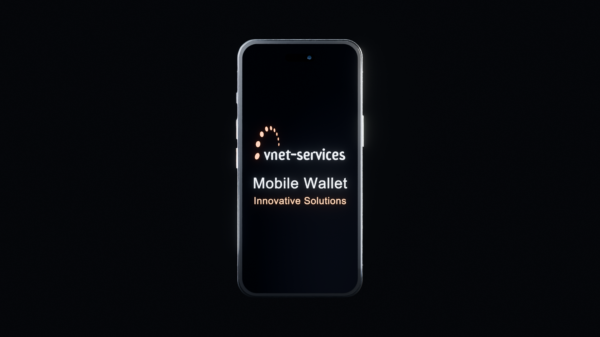

Eine Plattform.
Viele Verbindungen.
Ein Erlebnis.
Mobile Wallet, Gaming-Terminals und Betriebssteuerung. Entdecken Sie, wie Vnet die Abläufe eines Gaming-Standorts verbindet.

MOBILE WALLETCONNECTED BY VNETHerstellerangaben aus dem Folder 2025, keine aktuelle Bestandsabfrage. Quelle ↗
Vom Check-in
bis zum Cashout.
Ein Ablauf, den Sie selbst erkunden können. Wählen Sie einen Schritt und verfolgen Sie, was am Smartphone und am Standort passiert.
Schematische Darstellung, keine aktive Wallet. Ein- und Auszahlung erfolgen laut Folder beim POS-Mitarbeiter. Remote Playing wird als optionale Funktion genannt. Quelle: Folder, gedruckte Seiten 6–7.
Hinter jedem Erlebnis
steht ein System.
Von zentralen Diensten bis zum lokalen Outlet. Wählen Sie eine Komponente und entdecken Sie ihre Rolle.
Vereinfachte funktionale Übersicht nach Folder, gedruckte Seiten 4–5. Die Linien zeigen Zusammenhänge, keine spezifizierten API- oder Sicherheitsgrenzen.
Aus Ereignissen
wird Überblick.
Unterschiedliche Aufgaben brauchen unterschiedliche Perspektiven. Erkunden Sie die vier Reporting-Bereiche des Folders.
Folder, gedruckte Seiten 8–10.
Eine internationale
Entwicklung.
Im Folder genannte Referenzmärkte.
Quelle: Folder 2025, gedruckte Seite 11. Historische Herstellerangaben; keine Aussage zum heutigen Betrieb oder zu Zulassungen.
Die Idee wird
sichtbar.
Eine filmische Vision für Mobile Wallet: digitale Zahlungen und dasselbe Spiel auf mehreren Geräten. Diese Darstellung erweitert den im Folder beschriebenen POS-Ablauf.
Konzeptgrenzen & Musik-Credits
Die gezeigten App-Zahlungen, Kartenauszahlungen und exakte Spielstandfortsetzung sind ein Zielbild, kein Nachweis aktuell verfügbarer oder regulatorisch zugelassener Funktionen. Subject to regulatory approval. Play responsibly.
Musik: Airport Lounge — Kevin MacLeod, CC BY 4.0; Ausschnitt, Fades und Mischung. Casino-Atmosphäre: craigsmith, Freesound 438129, CC0. Vollständige Credits.